Recettes salées
Première partie
Accras, féroce, colombo, court-bouillon, matoutou de crabe, pâté en pot, ragoût de cochon et pois d'Angole de Noël… La cuisine martiniquaise mêle les héritages amérindien (manioc, piment, boucan), africain, européen et indien. Elle a ses plats de fête : le matoutou de Pâques, le pâté en pot des mariages, le menu de Noël. Attention : le piment est très fort, on le dose avec prudence.
16 recettes
Accras de morue
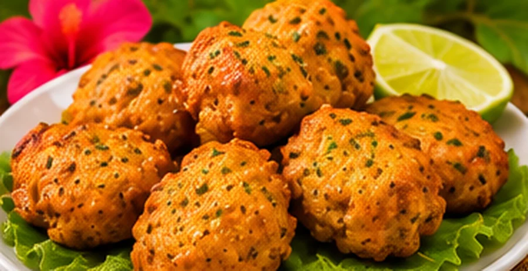
🧺Les ingrédients
- 250 gde morue salée
- 250 gde farine
- 1 c. à caféde levure
- 25 cld'eau
- 1oignon
- 3cives
- 2gousses d'ail
- persil, thym, piment, huile pour la friture
👩🍳La préparation
- Dessaler : La veille, faites tremper la morue dans l'eau froide, en changeant l'eau plusieurs fois.
- Effeuiller : Pochez-la 5 minutes, puis émiettez-la en retirant arêtes et peau.
- La pâte : Mélangez farine, levure et eau, ajoutez la morue, l'oignon, les cives, l'ail, le persil, le thym et le piment hachés ; laissez reposer 1 heure.
- Frire : Un adulte fait tomber des petites cuillerées de pâte dans l'huile chaude.
- Égoutter : Retirez-les quand ils sont dorés, posez-les sur du papier absorbant et servez chaud.
🥤Les boissons d'accompagnement
Ti-punch
Rhum agricole AOC Martinique, citron vert et sucre de canne · pour les adultes
Bière blonde locale
Une bière légère et désaltérante · pour les adultes
Citronnade
Citron vert, eau et sirop de canne, sans alcool
Féroce d'avocat

🧺Les ingrédients
- 2avocats bien mûrs
- 150 gde morue dessalée
- 80 gde farine de manioc
- 1citron vert
- 2gousses d'ail
- cives, persil, piment, huile
👩🍳La préparation
- Griller : Faites griller la morue dessalée à la flamme ou à la poêle, puis émiettez-la.
- Écraser : Écrasez la chair des avocats avec le jus de citron.
- Mélanger : Ajoutez la morue, l'ail, les cives, le persil et le piment hachés, et un filet d'huile.
- Lier : Ajoutez la farine de manioc peu à peu, jusqu'à obtenir une pâte ferme.
- Servir : Servez frais, en entrée.
🥤Les boissons d'accompagnement
Vin blanc sec
Un blanc vif, qui supporte les épices · pour les adultes
Vin rosé
Un rosé sec et fruité · pour les adultes
Citronnade
Citron vert, eau et sirop de canne, sans alcool
Chiquetaille de morue
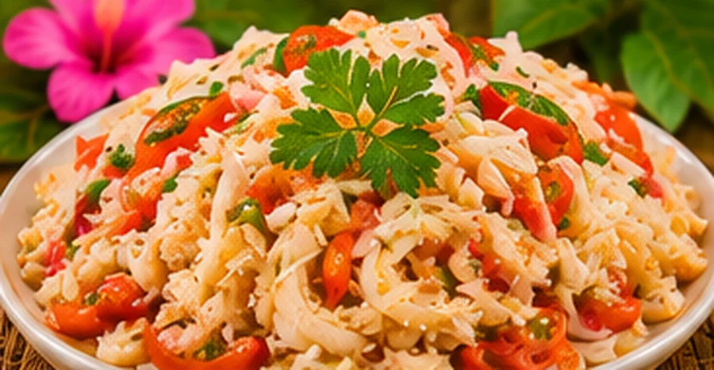
🧺Les ingrédients
- 300 gde morue salée
- 2tomates
- 1oignon
- 2citrons verts
- 2gousses d'ail
- cives, persil, piment, huile, poivre
👩🍳La préparation
- Dessaler : Faites dessaler la morue une nuit dans l'eau froide.
- Griller : Faites-la griller rapidement, puis effilochez-la finement à la main.
- Hacher : Hachez l'oignon, l'ail, les cives, le persil, et coupez les tomates en dés.
- Assaisonner : Mélangez tout avec le jus de citron, l'huile, le piment et le poivre.
- Servir : Laissez reposer 30 minutes au frais et servez avec du pain ou des légumes.
🥤Les boissons d'accompagnement
Vin blanc sec
Un blanc vif, qui supporte les épices · pour les adultes
Vin rosé
Un rosé sec et fruité · pour les adultes
Citronnade
Citron vert, eau et sirop de canne, sans alcool
Colombo de poulet

🧺Les ingrédients
- 1,5 kgde poulet en morceaux
- 2citrons verts
- 3 c. à soupede poudre à colombo
- 2pommes de terre
- 1aubergine
- 1christophine
- 1oignon
- ail, thym, bois d'Inde, piment, huile, sel
👩🍳La préparation
- Mariner : Faites mariner le poulet avec le citron, l'ail, le piment et une partie du colombo.
- Dorer : Faites revenir le poulet dans l'huile avec l'oignon.
- Épicer : Ajoutez le reste du colombo, remuez, puis couvrez d'eau.
- Les légumes : Ajoutez les légumes en morceaux et laissez mijoter 45 minutes.
- Servir : Servez avec du riz blanc.
🥤Les boissons d'accompagnement
Vin rosé
Un rosé sec et fruité · pour les adultes
Bière blonde locale
Une bière légère et désaltérante · pour les adultes
Jus de gingembre
Gingembre râpé, citron et sucre, sans alcool
Court-bouillon de poisson

🧺Les ingrédients
- 4tranches ou petits poissons entiers
- 3tomates
- 1oignon
- 3citrons verts
- 3gousses d'ail
- rocou ou concentré de tomate, cives, thym, bois d'Inde, piment, huile
👩🍳La préparation
- Mariner : Faites mariner le poisson 1 heure avec citron, ail, sel et piment.
- La sauce : Faites revenir l'oignon, puis les tomates, le rocou, les cives et le thym.
- Mouiller : Ajoutez un verre d'eau et laissez réduire 10 minutes.
- Cuire : Déposez le poisson dans la sauce et laissez cuire 10 à 15 minutes.
- Servir : Arrosez de jus de citron et servez avec du riz.
🥤Les boissons d'accompagnement
Vin blanc sec
Un blanc vif, qui supporte les épices · pour les adultes
Vin rosé
Un rosé sec et fruité · pour les adultes
Citronnade
Citron vert, eau et sirop de canne, sans alcool
Blaff de poisson

🧺Les ingrédients
- 4tranches de poisson
- 4citrons verts
- 1oignon
- 3gousses d'ail
- cives, thym, persil, bois d'Inde, piment entier, sel
👩🍳La préparation
- Mariner : Faites mariner le poisson 30 minutes avec le jus de 2 citrons, l'ail et le sel.
- Le bouillon : Faites bouillir 1 litre d'eau avec l'oignon, les aromates et le piment entier.
- Pocher : Plongez le poisson dans le bouillon : 8 à 10 minutes suffisent.
- Citronner : Ajoutez le jus des derniers citrons hors du feu.
- Servir : Servez dans le bouillon, avec du riz ou des légumes pays.
🥤Les boissons d'accompagnement
Vin blanc sec
Un blanc vif, qui supporte les épices · pour les adultes
Vin rosé
Un rosé sec et fruité · pour les adultes
Citronnade
Citron vert, eau et sirop de canne, sans alcool
Fricassée de chatrous

🧺Les ingrédients
- 1 kgde chatrous (poulpes) nettoyés
- 3tomates
- 1oignon
- 3citrons verts
- 3gousses d'ail
- cives, thym, bois d'Inde, piment, huile
👩🍳La préparation
- Attendrir : Frottez les chatrous au citron et au gros sel, rincez, puis faites-les blanchir 10 minutes.
- Couper : Coupez-les en morceaux.
- Faire revenir : Faites dorer l'oignon, l'ail et les chatrous dans l'huile.
- Mijoter : Ajoutez les tomates et les aromates, couvrez et laissez cuire 45 minutes, jusqu'à ce qu'ils soient tendres.
- Servir : Servez avec du riz et des haricots rouges.
🥤Les boissons d'accompagnement
Vin blanc sec
Un blanc vif, qui supporte les épices · pour les adultes
Vin rosé
Un rosé sec et fruité · pour les adultes
Citronnade
Citron vert, eau et sirop de canne, sans alcool
Matoutou de crabe

🧺Les ingrédients
- 6crabes de terre (ou tourteaux)
- 400 gde riz
- 2oignons
- 4gousses d'ail
- 2tomates
- citron vert, cives, thym, persil, bois d'Inde, colombo ou safran, piment, huile
👩🍳La préparation
- Nettoyer : Brossez les crabes et frottez-les au citron ; coupez-les en deux, gardez les pinces.
- Faire revenir : Faites dorer les crabes dans l'huile avec les oignons, l'ail et les tomates.
- Épicer : Ajoutez les aromates, le safran et le piment, puis couvrez d'eau.
- Le riz : Après 15 minutes, ajoutez le riz et laissez cuire jusqu'à ce qu'il ait absorbé le bouillon.
- Servir : Servez bien chaud, en famille.
🥤Les boissons d'accompagnement
Vin blanc sec
Un blanc vif, qui supporte les épices · pour les adultes
Bière blonde locale
Une bière légère et désaltérante · pour les adultes
Citronnade
Citron vert, eau et sirop de canne, sans alcool
Pâté en pot
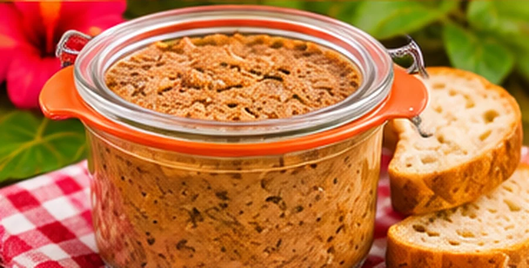
🧺Les ingrédients
- 1,5 kgd'abats et de morceaux de mouton (tête, pattes, tripes)
- 2citrons verts
- 500 gde légumes : carottes, navets, poireaux, chou, céleri
- 300 gde légumes pays : igname, malanga
- câpres, vin blanc, oignons, ail, cives, thym, bois d'Inde, clous de girofle, piment
👩🍳La préparation
- Nettoyer : Nettoyez soigneusement les abats au citron et à l'eau bouillante.
- Cuire : Faites-les cuire longuement dans une grande marmite d'eau avec les aromates.
- Les légumes : Ajoutez les légumes en petits dés et laissez mijoter jusqu'à ce que la soupe épaississe.
- Assaisonner : Ajoutez les câpres et, hors du feu, un trait de vin blanc.
- Servir : Servez très chaud, en début de repas de fête.
🥤Les boissons d'accompagnement
Vin blanc sec
Un blanc vif, qui supporte les épices · pour les adultes
Vin rosé
Un rosé sec et fruité · pour les adultes
Jus de gingembre
Gingembre râpé, citron et sucre, sans alcool
Boudin créole
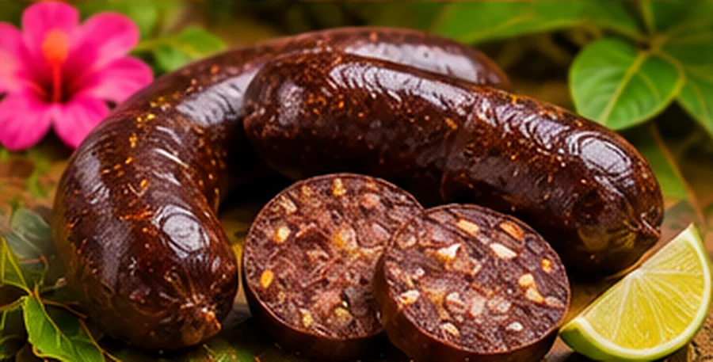
🧺Les ingrédients
- 1 lde sang de porc (chez le boucher)
- 500 gde pain rassis
- 50 clde lait
- 3oignons
- 1bouquet de cives
- ail, persil, thym, bois d'Inde, piment, sel, poivre
- boyaux de porc propres
👩🍳La préparation
- Tremper : Faites tremper le pain dans le lait, puis écrasez-le.
- Hacher : Hachez finement oignons, ail, cives, persil et piment.
- Mélanger : Mélangez le pain, le sang et les aromates ; assaisonnez.
- Embosser : Un adulte remplit les boyaux avec un entonnoir et les noue par tronçons.
- Pocher : Faites-les cuire 20 minutes dans l'eau frémissante, sans bouillir ; piquez-les pour vérifier la cuisson.
🥤Les boissons d'accompagnement
Ti-punch
Rhum agricole AOC Martinique, citron vert et sucre de canne · pour les adultes
Bière blonde locale
Une bière légère et désaltérante · pour les adultes
Citronnade
Citron vert, eau et sirop de canne, sans alcool
Soupe z'habitants

🧺Les ingrédients
- 300 gde lard salé ou de queue de cochon
- 500 gde légumes pays : igname, dachine, patate douce
- 2épis de maïs
- 200 gde haricots rouges cuits
- 2carottes
- 1poignée d'épinards pays
- oignon, ail, cives, thym, piment
👩🍳La préparation
- Dessaler : Faites bouillir la viande salée 10 minutes et jetez l'eau.
- Cuire : Remettez-la dans une marmite d'eau avec l'oignon, l'ail et les aromates, 45 minutes.
- Les légumes : Ajoutez les légumes en morceaux et le maïs coupé en rondelles.
- Mijoter : Ajoutez les haricots et les épinards, laissez cuire encore 30 minutes.
- Servir : Servez très chaud.
🥤Les boissons d'accompagnement
Vin rouge léger
Un rouge fruité, peu tannique · pour les adultes
Bière blonde locale
Une bière légère et désaltérante · pour les adultes
Jus de gingembre
Gingembre râpé, citron et sucre, sans alcool
Christophines gratinées
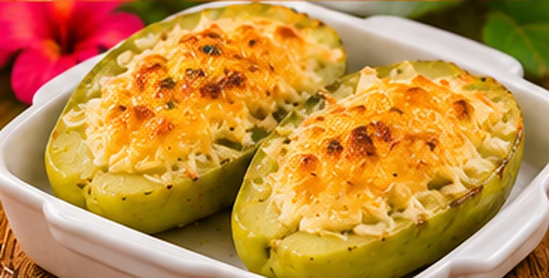
🧺Les ingrédients
- 4christophines
- 200 gde jambon ou de viande hachée
- 1oignon
- 2gousses d'ail
- 50 gde beurre
- 100 gde fromage râpé
- chapelure, persil, cives, piment, sel
👩🍳La préparation
- Cuire : Faites cuire les christophines entières 20 minutes à l'eau salée.
- Évider : Coupez-les en deux, retirez le cœur et évidez la chair en gardant la peau.
- La farce : Faites revenir l'oignon, l'ail, le jambon, puis la chair écrasée et les herbes.
- Garnir : Remplissez les demi-christophines, couvrez de fromage et de chapelure.
- Gratiner : Faites gratiner 20 minutes à 200 °C.
🥤Les boissons d'accompagnement
Vin blanc sec
Un blanc vif, qui supporte les épices · pour les adultes
Vin rosé
Un rosé sec et fruité · pour les adultes
Jus de goyave
Jus de fruit pays, sans alcool
Ragoût de cochon

🧺Les ingrédients
- 2 kgd'échine de porc en morceaux
- 3citrons verts
- 2oignons
- 5gousses d'ail
- cives, thym, persil, bois d'Inde, clous de girofle, muscade, piment, huile, sel
👩🍳La préparation
- Mariner : La veille, lavez la viande au citron et faites-la mariner avec l'ail, les aromates et le piment.
- Dorer : Faites dorer les morceaux dans l'huile chaude, sans les cuire.
- Les oignons : Ajoutez les oignons et les épices, remuez.
- Mijoter : Ajoutez un peu d'eau, couvrez et laissez mijoter 1 h 30 à feu doux.
- Servir : Servez avec des pois d'Angole, de l'igname et du riz.
🥤Les boissons d'accompagnement
Vin rouge léger
Un rouge fruité, peu tannique · pour les adultes
Shrubb
Liqueur de rhum aux écorces d'orange, boisson de Noël · pour les adultes
Jus de groseille pays
Boisson rouge de fleurs d'oseille de Guinée, sans alcool
Pois d'Angole

🧺Les ingrédients
- 500 gde pois d'Angole frais ou secs
- 200 gde lard salé ou de queue de cochon
- 1oignon
- 2gousses d'ail
- cives, thym, bois d'Inde, piment entier
👩🍳La préparation
- Tremper : S'ils sont secs, faites tremper les pois une nuit.
- Dessaler : Faites bouillir le lard 10 minutes et jetez l'eau.
- Cuire : Mettez pois, lard, oignon, ail et aromates dans une marmite d'eau.
- Mijoter : Laissez cuire 1 h à 1 h 30, jusqu'à ce que les pois soient fondants dans une sauce épaisse.
- Servir : Servez avec le ragoût de cochon.
🥤Les boissons d'accompagnement
Vin rouge léger
Un rouge fruité, peu tannique · pour les adultes
Shrubb
Liqueur de rhum aux écorces d'orange, boisson de Noël · pour les adultes
Jus de groseille pays
Boisson rouge de fleurs d'oseille de Guinée, sans alcool
Dombrés aux crevettes

🧺Les ingrédients
- 250 gde farine
- eau tiède et une pincée de sel
- 500 gde crevettes
- 2tomates
- 1oignon
- ail, cives, thym, bois d'Inde, piment, huile
👩🍳La préparation
- La pâte : Mélangez farine, sel et eau pour obtenir une pâte souple.
- Rouler : Roulez de petites boulettes ou de petits boudins entre les mains.
- La sauce : Faites revenir l'oignon, l'ail, les tomates et les aromates, puis ajoutez de l'eau.
- Cuire : Plongez les dombrés dans la sauce et laissez cuire 20 minutes, puis ajoutez les crevettes 5 minutes.
- Servir : Servez bien chaud.
🥤Les boissons d'accompagnement
Vin blanc sec
Un blanc vif, qui supporte les épices · pour les adultes
Bière blonde locale
Une bière légère et désaltérante · pour les adultes
Citronnade
Citron vert, eau et sirop de canne, sans alcool
Fricassée de lambi

🧺Les ingrédients
- 800 gde chair de lambi nettoyée
- 3citrons verts
- 2tomates
- 1oignon
- 3gousses d'ail
- cives, thym, persil, piment, huile
👩🍳La préparation
- Nettoyer : Frottez la chair au citron et au gros sel, rincez.
- Attendrir : Battez-la au maillet, puis faites-la cuire 30 minutes à l'eau ou en autocuiseur.
- Couper : Coupez-la en morceaux.
- Mijoter : Faites revenir oignon, ail et tomates, ajoutez le lambi et les aromates et laissez cuire 20 minutes.
- Servir : Servez avec du riz et un filet de citron.
🥤Les boissons d'accompagnement
Vin blanc sec
Un blanc vif, qui supporte les épices · pour les adultes
Vin rosé
Un rosé sec et fruité · pour les adultes
Citronnade
Citron vert, eau et sirop de canne, sans alcool
Recettes sucrées
Deuxième partie
Blanc-manger coco, sorbet coco tourné à la main, pain au beurre et chocolat de communion, jus de groseille de Noël… Les douceurs martiniquaises font la part belle à la coco, au cacao, à la canne et aux fruits pays.
14 recettes
Blanc-manger coco
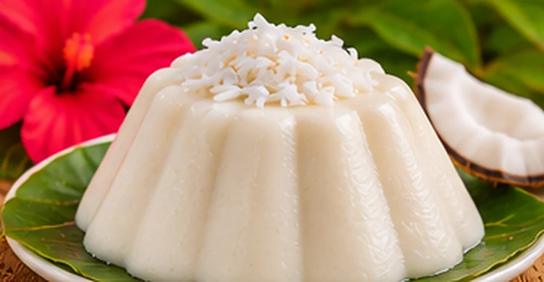
🧺Les ingrédients
- 50 clde lait de coco
- 1 boîtede lait concentré sucré
- 25 clde lait
- 6 feuillesde gélatine (ou 2 g d'agar-agar)
- vanille, cannelle, zeste de citron vert
👩🍳La préparation
- Ramollir : Faites ramollir la gélatine dans l'eau froide.
- Chauffer : Faites chauffer les laits avec les parfums, sans bouillir.
- Lier : Ajoutez la gélatine essorée et mélangez bien.
- Mouler : Versez dans un moule à savarin.
- Prendre : Laissez prendre au moins 4 heures au réfrigérateur avant de démouler.
🥤Les boissons d'accompagnement
Café
Un café chaud, à la fin du repas
Eau de coco
L'eau d'une noix de coco verte, sans alcool
Jus de maracudja
Fruit de la passion pressé, sans alcool
Flan coco

🧺Les ingrédients
- 40 clde lait de coco
- 1 boîtede lait concentré sucré
- 25 clde lait
- 4œufs
- 100 gde coco râpée
- sucre pour le caramel, vanille
👩🍳La préparation
- Caramel : Faites un caramel blond et versez-le au fond d'un moule.
- Mélanger : Battez les œufs avec les laits et la vanille, ajoutez la coco.
- Cuire : Versez dans le moule et faites cuire 50 minutes au bain-marie à 180 °C.
- Refroidir : Laissez refroidir, puis une nuit au réfrigérateur.
- Démouler : Démoulez sur un plat creux pour garder le caramel.
🥤Les boissons d'accompagnement
Café
Un café chaud, à la fin du repas
Eau de coco
L'eau d'une noix de coco verte, sans alcool
Chocolat pays
Bâton de cacao fondu dans le lait, à la cannelle et à la muscade
Sorbet coco
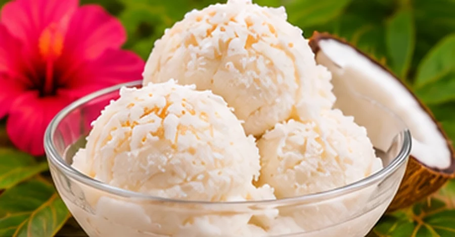
🧺Les ingrédients
- 50 clde lait de coco
- 1 boîtede lait concentré sucré
- 25 clde lait
- vanille, cannelle, zeste de citron vert, muscade
👩🍳La préparation
- Parfumer : Faites chauffer le lait avec la vanille, la cannelle et le zeste, puis laissez infuser et refroidir.
- Mélanger : Ajoutez le lait de coco et le lait concentré.
- Glacer : Versez dans une sorbetière, ou au congélateur en remuant toutes les 30 minutes.
- Turbiner : Remuez jusqu'à obtenir une glace onctueuse.
- Servir : Servez en boules, avec un peu de coco râpée.
🥤Les boissons d'accompagnement
Eau de coco
L'eau d'une noix de coco verte, sans alcool
Jus de maracudja
Fruit de la passion pressé, sans alcool
Café
Un café chaud, à la fin du repas
Gâteau patate
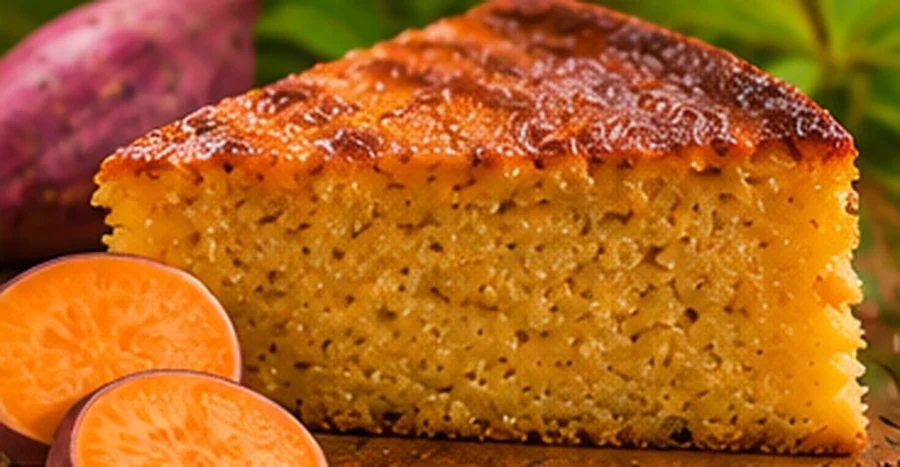
🧺Les ingrédients
- 1 kgde patates douces
- 150 gde sucre
- 3œufs
- 50 gde beurre
- 20 clde lait de coco
- vanille, cannelle, muscade, zeste de citron vert
👩🍳La préparation
- Cuire : Faites cuire les patates douces à l'eau, épluchez-les et écrasez-les.
- Mélanger : Ajoutez le sucre, le beurre, les œufs, le lait de coco et les épices.
- Mouler : Versez dans un moule beurré.
- Cuire : Faites cuire 1 heure à 180 °C.
- Servir : Laissez refroidir avant de couper.
🥤Les boissons d'accompagnement
Café
Un café chaud, à la fin du repas
Chocolat pays
Bâton de cacao fondu dans le lait, à la cannelle et à la muscade
Eau de coco
L'eau d'une noix de coco verte, sans alcool
Pain au beurre
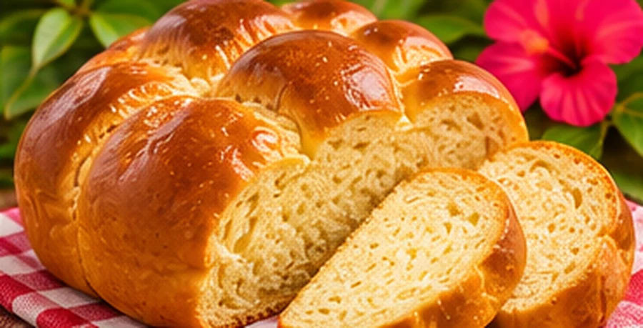
🧺Les ingrédients
- 500 gde farine
- 100 gde sucre
- 150 gde beurre mou
- 2œufs + 1 jaune
- 15 clde lait tiède
- 1 sachetde levure de boulanger
- sel, vanille, zeste de citron vert
👩🍳La préparation
- Pétrir : Mélangez farine, sucre, sel, levure, puis le lait, les œufs et le beurre ; pétrissez 10 minutes.
- Lever : Laissez lever 2 heures dans un endroit tiède.
- Façonner : Divisez la pâte en trois boudins et tressez-les.
- Lever encore : Laissez gonfler 1 heure, puis dorez au jaune d'œuf.
- Cuire : Faites cuire 35 minutes à 180 °C.
🥤Les boissons d'accompagnement
Chocolat pays
Bâton de cacao fondu dans le lait, à la cannelle et à la muscade
Café
Un café chaud, à la fin du repas
Eau de coco
L'eau d'une noix de coco verte, sans alcool
Chocolat de communion
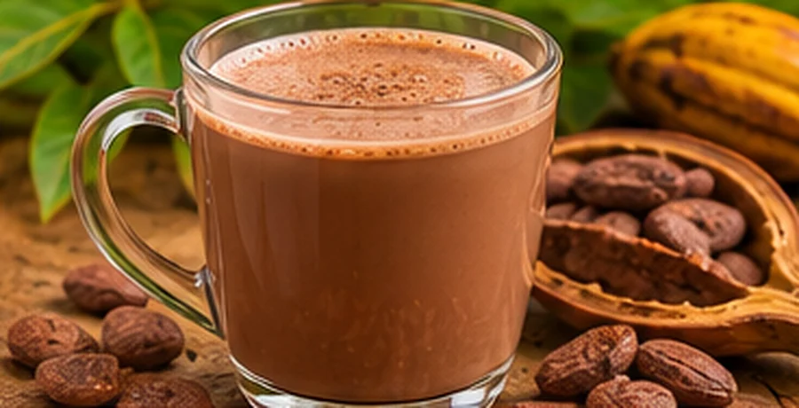
🧺Les ingrédients
- 200 gde cacao pays en bâton (ou chocolat noir)
- 1,5 lde lait
- 1 boîtede lait concentré sucré
- cannelle, muscade, vanille, zeste de citron vert, une pincée de sel, un peu de maïzena
👩🍳La préparation
- Râper : Râpez le bâton de cacao.
- Chauffer : Faites chauffer le lait avec la cannelle, la muscade, la vanille et le zeste.
- Fondre : Ajoutez le cacao et remuez jusqu'à ce qu'il fonde.
- Épaissir : Ajoutez le lait concentré et un peu de maïzena délayée ; laissez épaissir en remuant.
- Servir : Servez très chaud, avec des tranches de pain au beurre.
🥤Les boissons d'accompagnement
Chocolat pays
Bâton de cacao fondu dans le lait, à la cannelle et à la muscade
Café
Un café chaud, à la fin du repas
Eau de coco
L'eau d'une noix de coco verte, sans alcool
Doucelettes coco
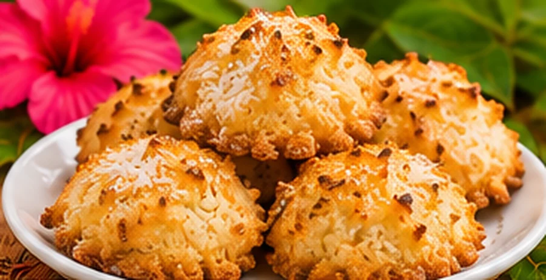
🧺Les ingrédients
- 250 gde coco râpée
- 150 gde sucre
- 2blancs d'œufs
- 1 boîtede lait concentré sucré (petite)
- vanille, zeste de citron vert
👩🍳La préparation
- Mélanger : Mélangez la coco, le sucre, le lait concentré et les parfums.
- Lier : Ajoutez les blancs d'œufs légèrement battus.
- Former : Formez de petits tas sur une plaque recouverte de papier cuisson.
- Cuire : Faites dorer 15 à 20 minutes à 170 °C.
- Refroidir : Laissez refroidir avant de les décoller.
🥤Les boissons d'accompagnement
Café
Un café chaud, à la fin du repas
Eau de coco
L'eau d'une noix de coco verte, sans alcool
Jus de maracudja
Fruit de la passion pressé, sans alcool
Confiture de goyave
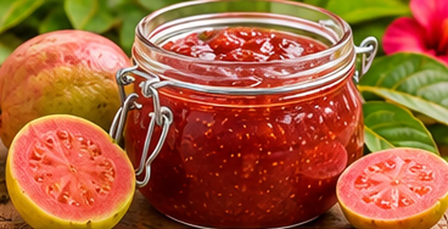
🧺Les ingrédients
- 1 kgde goyaves bien mûres
- 700 gde sucre
- 1citron vert
- 1 bâton de cannelle, 1 gousse de vanille
👩🍳La préparation
- Couper : Lavez et coupez les goyaves en morceaux.
- Cuire : Faites-les cuire 15 minutes avec un peu d'eau.
- Passer : Passez-les au moulin à légumes pour retirer les graines.
- Confire : Ajoutez le sucre, le citron et les épices, et faites cuire 30 minutes en remuant.
- Mettre en pots : Versez dans des pots ébouillantés et fermez aussitôt.
🥤Les boissons d'accompagnement
Café
Un café chaud, à la fin du repas
Chocolat pays
Bâton de cacao fondu dans le lait, à la cannelle et à la muscade
Jus de goyave
Jus de fruit pays, sans alcool
Bananes flambées

🧺Les ingrédients
- 4bananes mûres
- 40 gde beurre
- 50 gde sucre de canne
- 1citron vert
- 5 clde rhum
- cannelle, vanille
👩🍳La préparation
- Couper : Coupez les bananes en deux dans la longueur.
- Dorer : Dorez-les dans le beurre.
- Caraméliser : Ajoutez le sucre, la cannelle et le citron.
- Flamber : Un adulte verse le rhum chaud et l'enflamme avec précaution.
- Servir : Servez aussitôt, avec du sorbet coco.
🥤Les boissons d'accompagnement
Café
Un café chaud, à la fin du repas
Eau de coco
L'eau d'une noix de coco verte, sans alcool
Rhum vieux AOC Martinique
Rhum agricole vieilli en fût de chêne · pour les adultes
Gâteau à l'ananas

🧺Les ingrédients
- 1ananas (ou une boîte d'ananas en tranches)
- 150 gde sucre + 80 g pour le caramel
- 3œufs
- 150 gde farine
- 100 gde beurre fondu
- levure, vanille, rhum (facultatif), cerises confites
👩🍳La préparation
- Caramel : Faites un caramel et versez-le au fond du moule.
- Ananas : Disposez les tranches d'ananas sur le caramel, une cerise au centre.
- La pâte : Battez œufs et sucre, ajoutez le beurre, la farine, la levure et la vanille.
- Cuire : Versez sur l'ananas et faites cuire 45 minutes à 180 °C.
- Démouler : Démoulez tiède, en retournant le gâteau.
🥤Les boissons d'accompagnement
Café
Un café chaud, à la fin du repas
Jus de maracudja
Fruit de la passion pressé, sans alcool
Eau de coco
L'eau d'une noix de coco verte, sans alcool
Salade de fruits pays
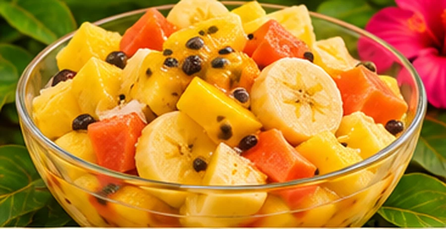
🧺Les ingrédients
- 1mangue
- 1/2ananas
- 1/2papaye
- 2bananes
- 2fruits de la passion
- jus de citron vert, sirop de canne, vanille
👩🍳La préparation
- Éplucher : Épluchez les fruits.
- Couper : Coupez-les en morceaux réguliers.
- Mélanger : Mélangez-les délicatement dans un saladier.
- Assaisonner : Arrosez de jus de citron vert, de sirop de canne et ajoutez la pulpe des fruits de la passion.
- Servir : Servez bien frais.
🥤Les boissons d'accompagnement
Jus de maracudja
Fruit de la passion pressé, sans alcool
Eau de coco
L'eau d'une noix de coco verte, sans alcool
Café
Un café chaud, à la fin du repas
Jus de groseille pays

🧺Les ingrédients
- 300 gde calices de groseille pays (oseille de Guinée)
- 2 ld'eau
- 250 gde sucre de canne
- 1 morceau de gingembre, 1 bâton de cannelle, quelques clous de girofle, zeste d'orange
👩🍳La préparation
- Rincer : Rincez les calices rouges et retirez la graine du centre.
- Bouillir : Faites bouillir l'eau avec le gingembre et les épices.
- Infuser : Hors du feu, ajoutez les calices et laissez infuser plusieurs heures.
- Filtrer : Filtrez et sucrez selon le goût.
- Servir : Servez très frais, avec des glaçons.
🥤Les boissons d'accompagnement
Jus de groseille pays
Boisson rouge de fleurs d'oseille de Guinée, sans alcool
Eau de coco
L'eau d'une noix de coco verte, sans alcool
Café
Un café chaud, à la fin du repas
Jus de maracudja

🧺Les ingrédients
- 8fruits de la passion bien ridés
- 1 ld'eau fraîche
- sucre de canne ou sirop, quelques gouttes de vanille
👩🍳La préparation
- Ouvrir : Coupez les fruits en deux et videz la pulpe.
- Mixer : Mixez brièvement la pulpe avec un peu d'eau pour détacher les graines.
- Filtrer : Passez au tamis si vous ne voulez pas de graines.
- Allonger : Ajoutez le reste d'eau, le sucre et la vanille.
- Servir : Servez très frais, avec des glaçons.
🥤Les boissons d'accompagnement
Jus de maracudja
Fruit de la passion pressé, sans alcool
Eau de coco
L'eau d'une noix de coco verte, sans alcool
Café
Un café chaud, à la fin du repas